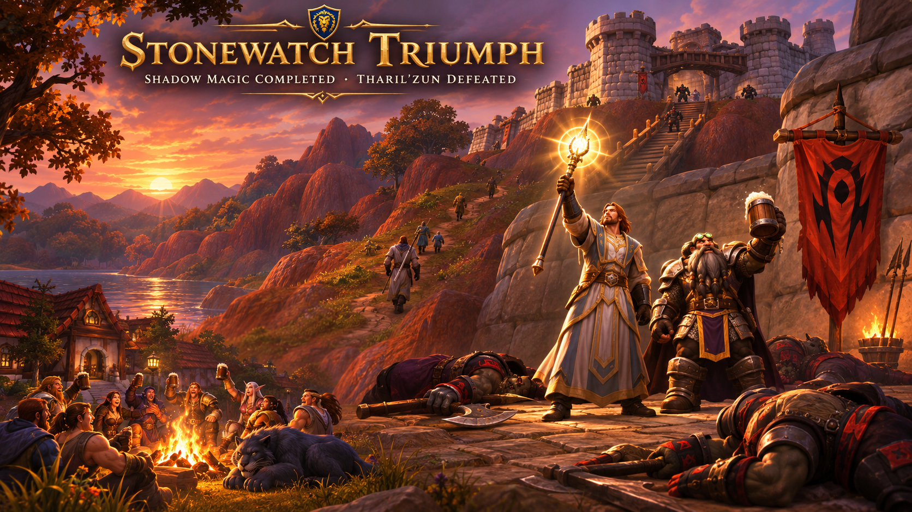
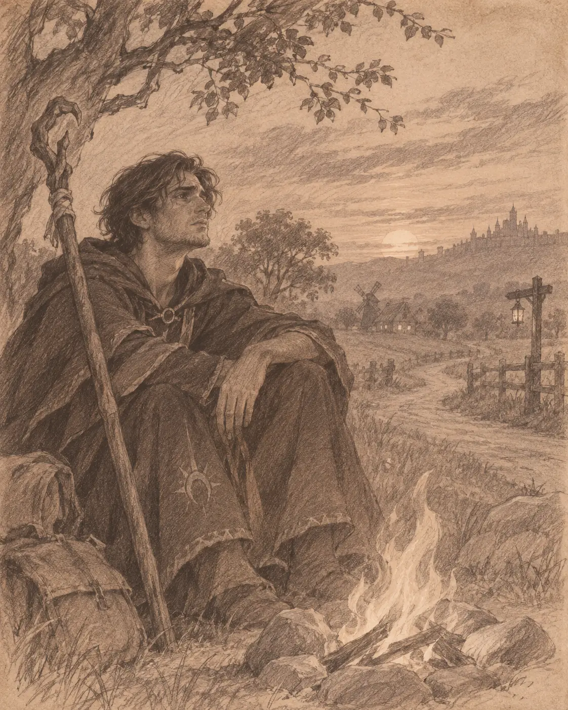
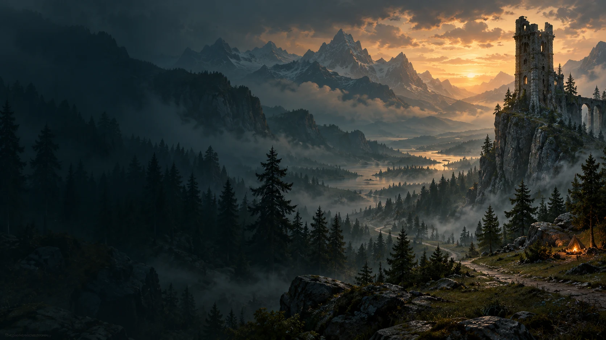
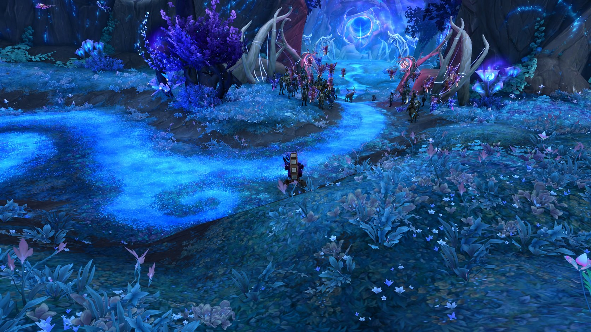

WARCRAFT DISPATCH
The next news from Azeroth is on its way.
Read the latest reports on Wowhead while the news feed loads.
Open Wowhead ↗
EXCAVATION SITE: WETLANDS · XUTHAR & CARRO
Saltspine in the water. Shadetooth in the grass. An ancient guardian in the heart of the mountain. Xuthar and Carro return from a new dungeon with another unforgettable chapter of their friendship.
22 NOVEMBER 2026 · WETLANDS Xuthar, Carro & Broken Tooth · Original Full HD

22 NOVEMBER · DUSKWOOD FIELD NOTES
Level 25 · 257 completed quest IDs · 16 active. Raven Hill, the hermit and Sven’s camp continue the story, with 17 original Full HD screenshots.
Read the update and view the photographs
22 NOVEMBER 2026 · NEW DUNGEON CHRONICLE
Saltspine, Shadetooth and the Relic Guardian fall before Xuthar and Carro. Follow the hidden valley, the burning camp and the fossil cliffs in eleven new novel chapters and 22 original Full HD photographs.
01 / THE WORLD BEYOND OUR JOURNEY
WARCRAFT DISPATCH
Read the latest reports on Wowhead while the news feed loads.
Open Wowhead ↗Headlines from Wowhead · Times shown in Italy
DUSKWOOD / 22 NOVEMBER 2026 · LEVEL 25
Beyond Darkshire, the roads now lead through Raven Hill, the hermit’s clearing and Sven’s lonely camp. Xuthar reaches level 25 with nine more promises kept. The recovered Valor history opens new duties, and the stories of Blind Mary, Jitters and Sven are still unfolding.
PREVIOUS CHRONICLE NEWS · 20 NOVEMBER 2026 · HONOUR TO THE HEROES

PLAYER-CONFIRMED VICTORY · SHADOW MAGIC ✓ · THARIL'ZUN ✓
Both difficult Redridge quests are finished: Shadow Magic (#115), with all three Midnight Orbs recovered from the Blackrock Shadowcasters, and Tharil'zun (#19), the defeated leader of the Blackrock Outrunners. Xuthar and Carro Steelcave stand together in the original victory photograph. Afterward, friends gather at Lakeshire beside a fire. The 22:01 Italian-time official Blizzard EU snapshot now confirms both victories: 247 completed quest IDs, six active, level 24.
The Last Witness · Chapters 163–170 → · All seven original photos → · Quest results →
BLIZZARD VERIFIED · 20 NOVEMBER 2026 · QUEST CHAIN COMPLETE
Magistrate Solomon appeals to Lord Ello Ebonlocke for the Night Watch. But Darkshire's guards are all that stand between its people and Duskwood's dangers. Xuthar returns to Lakeshire with a refusal that is neither cowardly nor unjust: two towns need help, and there are not enough defenders to answer both calls. The official Blizzard profile confirms completions #145 and #146, bringing the total at 20:21 to 245 completed quest IDs with 8 in progress. The later 22:01 official Blizzard sync includes Stonewatch's two further victories: 247 completed and 6 active. Level 24; the exact in-game hand-in times are unknown.
The two verified quests → · The Night Watch's impossible choice → · Live Chronicle →
THE READING ROOM · A FRIEND BEYOND THE SEA
The Kaldorei and the Well of Eternity; The War of the Ancients; The Guardians of Tirisfal; The Last Guardian; The World Tree and the Emerald Dream. Legends of power, responsibility, ruin and renewal fill Xuthar’s quiet day. Far away, Carro Steelcave searches Maraudon for the epic Blade of Eternal Darkness, a rare dagger associated with Princess Theradras whose magic can deal Shadow damage and replenish mana. The prize remains a hope, not a recorded victory.
18 NOVEMBER 2026 · EVENING POSTSCRIPT · REDRIDGE MOUNTAINS
The last prison gate is far behind him. At Lakeshire Inn, Xuthar Morvayne, level 24, rests his weary bones beside the crackling fireplace. There will be new roads to walk in the coming days. Tonight, he has earned the stillness.
Read The Last Witness · Chapter 147 → · Evening Travel Journal →
02 / FROM THE TRAVELLER’S JOURNAL
 NEW DUNGEON VICTORY
NEW DUNGEON VICTORYXuthar, Carro and Broken Tooth cross the hidden valley and bring down its ancient guardian.
Read the epic & dungeon guideThe Night Watch, the first name in Stalvan’s mystery and a family history waiting in Raven Hill.
Read the new adventure NO ONE LEFT IN THE DARK
NO ONE LEFT IN THE DARKAfter the great enemies, the most human victory: two friends refusing to leave a wounded corporal behind.
Follow Keeshan’s rescue ↗ THE REDRIDGE CAMPAIGN
THE REDRIDGE CAMPAIGNNew companions, the Shadowhide camps, a solitary victory over Bellygrub—and unfinished business at Stonewatch.
Explore the illustrated adventure ↗ DUNGEON VICTORY
DUNGEON VICTORYBazil Thredd falls. A long investigation leads to the Seal of Wrynn, before one final hunt beneath the city’s bridges.
The story & dungeon guide ↗
13 NOVEMBER · HONOUR TO THE HEROES
Xuthar, Carro and the road to VanCleef. The complete epic, with 26 original Full HD photographs.

MEMORY BEFORE GLORY.03 / A LIFE, ONE CHAPTER AT A TIME
The Book of Forgotten Names
Not every name finds its way into history. Xuthar keeps them anyway. An unfolding novel of friendship, doubt and the small acts of courage that carry a traveller onward.
Continue the living book ↗04 / BEYOND THE NEXT RIDGE




THREE TRAVELLERS · ONE WORLD
A WINDOW INTO AZEROTH
The stories, places and atmosphere that bring us back. Take a moment between adventures.
 Xuthar and Carro victorious · Original Full HD ↗
Xuthar and Carro victorious · Original Full HD ↗